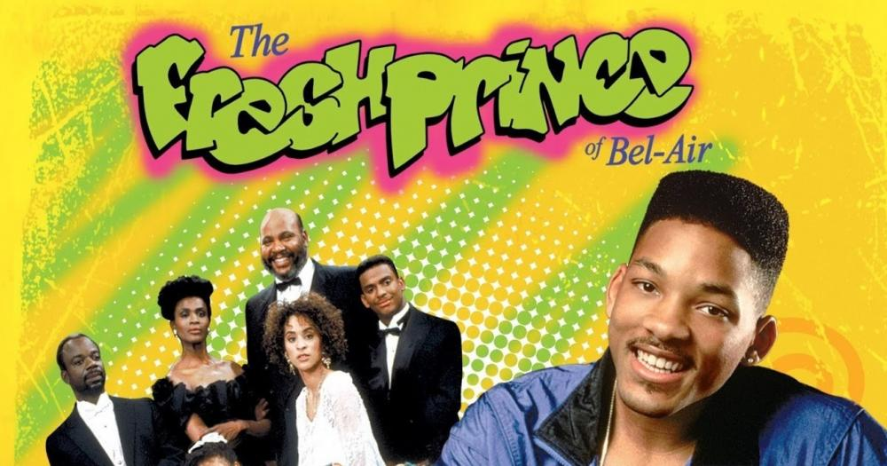

Um Maluco no Pedaço
Will é um jovem irrequieto e esperto que sai de sua vizinhança barra-pesada na Filadélfia e vai morar com os tios ricos em Bel-Air.

Todo Mundo Odeia o Chris
Acompanhe o dia a dia de Chris, um adolescente crescendo no Brooklyn dos anos 1980, ao lado de sua excêntrica família.

Tartarugas Ninja
Quatro jovens tartarugas treinadas por um rato sensei unem forças com April O'Neil para salvar Nova York do domínio de Shredder.

Velozes e Furiosos
Brian O'Conner se infiltra no submundo dos rachas de rua para investigar uma série de furtos e tenta ganhar a confiança de Dom Toretto.